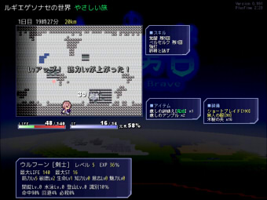

■2012-07-30 (月) 片道勇者37[RPG]▼
片道勇者は先日リプレイ機能を完成させて、
すでにテストプレイに突入しています。
結局、リプレイ機能がまるまる一週間かかる内容でした。
最後まで残しただけあってリソースに見合ってなーい！
でも結構ニヤニヤしながら見られます。
ウディコンの運営作業は今年はほぼ私一人なので、
始まった後はちょっとアップアップになってます。
それでもゲーム作る余裕があるので、
第一回に比べたら本当に楽になりましたね。
もう数十作品来ても驚かなくなりました。
しかしウディコン作品に比べて片道勇者のショッパさと言ったら……！
でもリソース投入し始めると、画像だけで半年とか1年とか増えますから、
リリース間隔とリソース集中度を考えると、このくらいの力の入れ具合が
ちょうどいいのかなとも思います。面白さだけ最優先ガチ入魂！
『今回のスクリーンショット』

リプレイ機能！経路と、起きた出来事などが
シンプルに表示されます。
【『片道勇者』 今回の進行状況】
・リプレイ機能を実装 → 先週はほとんどこれでした。 ・総合テストプレイを実施 → ということでテストプレイして、 次のような対応を行いました。 ・やさしいモードが長かったのでカット ・倉庫の中身は「更新」しない限り変化しないが、 クリアした場合に限って強制更新とした。 ・デバッグモードがオンだったので消した。 ・何度も出し入れしてるとなぜか倉庫に アイテムを預けられなくなってしまうバグを修正 ・魔王倒したのにクリアした扱いになってなかったバグ修正 ・オンライン幽霊システムのアイテムがバグってたのを修正 ・アップデートができなかったバグ修正 ・クリアコメントにミスがあったのを修正 ・一部の仲間が強力すぎたのを修正 ・クリア後にアイテムを全識別するように修正 ・クリアした人が全員「退席中の（プレイヤー名）」と 表記されるという、みんな退席中のクリア者一覧に なっていたのを修正 ・新たに識別屋を実装。500シルバでアイテムを全識別。 ・フォース屋でフォース覚えると所持金がマイナスになる バグを修正 ・更新データDLのダウンロード進度がなかったので追加 ・音量がおかしかったので調整 ・残り魅力をステータス欄に表示するよう修正 ・仲間の好感度の説明を追加 ・理力を使った直後に一部の敵の攻撃を喰らうと 即死級のダメージが出る計算ミスバグ修正 ・再現できない謎のバグが修正できません ・ウディタの根幹に関わる通信まわりにちょっとだけ 致命的なバグがあって直ってません。 |
という感じで、最終調整は順調ながら、
いくつか困った点が判明してウボボと言っている状況です。
なお、ゲーム難易度については、
ゲームが簡単になるキャンペーンを活用したり、
倉庫を活用したりもしくは運が良ければ、
３～４時間ちょっとの慣れでひとまず一回
クリアできるくらいになるかなあという見込みです。
初期クラス以外はクセが強いので、それらはまた
慣れた人向けという感じになると思います。
７月中リリースはさすがにやめておいた方がいい気がするので
次のチャンスは８月上旬になると思います。
お待たせしている方には誠に申し訳ございません！
珍しくバグが超少なくて、今回は行けると思ったのになあ、トホホ。
でも今ある問題が片付いてきれいになったら、もうリリースできる状況です。
もし、夏休みでゲームに飢えてる皆さまは、
しばらくウディコン作品をお楽しみいただければと思います！
もう３０作品オーバーで、面白い作品も盛りだくさんですよ。
2012-07-30 (月)  カテゴリ: 片道勇者
カテゴリ: 片道勇者
 カテゴリ: 片道勇者
カテゴリ: 片道勇者